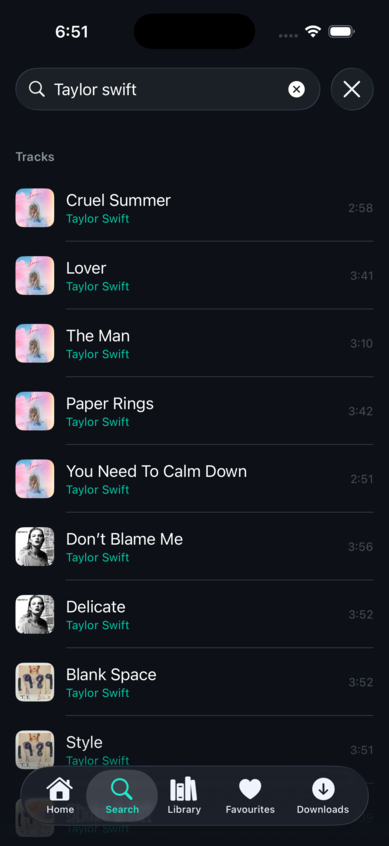
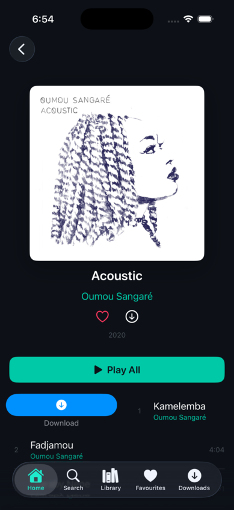

The App
What it looks like
Real screenshots from the v0.3.0-alpha running on iPhone 17 Pro simulator.

Home

Search

Album Detail

Swipe Actions
How a gap in Tidal's parental controls led to building a native iOS app with two-layer explicit content filtering.
A parent with a family Tidal subscription wants to give their child a safe music streaming experience. Tidal has an explicit content toggle — but any user can re-enable it from within the app. iOS Screen Time's "Clean" restriction only applies to Apple Music, not third-party apps.
The result: either the child has unrestricted access to explicit content, or the parent resorts to fragile workarounds like Guided Access and Screen Time layering that an older child could circumvent.
No structural mechanism exists to permanently filter explicit content in Tidal when a child uses their own iOS device unsupervised. This is a platform gap — not a configuration issue.
TeenTidal is a native iOS/iPadOS app that wraps Tidal's official SDK with structural content filtering — not a toggle the child can find and disable, but an architectural guarantee enforced at two independent layers.
Every API response passes through a single gateway service that strips any item where explicit == true before it reaches the UI. The child never sees explicit content in search, browse, or discovery.
A belt-and-braces check at the playback layer. Before any track or video ID reaches the Tidal Player SDK, the guard verifies it against the explicit flag. If Layer 1 somehow misses something, Layer 2 catches it.
There is no settings screen. No toggle to disable. No deep link that bypasses the filter. The filtering is hardcoded into the architecture — it cannot be turned off without rebuilding the app.
Real screenshots from the v0.3.0-alpha running on iPhone 17 Pro simulator.


A quick walkthrough of the discovery flow — browsing, searching, and navigating between screens.
Three versions in three days. Each built on the last — from bare architecture to a full-featured music discovery app with five tabs, artist profiles, and persistent caching.
Two-layer filtering architecture designed and implemented. FilteredCatalog wraps all API responses, stripping items where explicit == true. PlayerService guard adds a belt-and-braces check before any track reaches the Tidal Player SDK.
OAuth 2.1 PKCE authentication via ASWebAuthenticationSession. Tidal SDK integration for Auth, Player, and EventProducer. Token storage in iOS Keychain. Three-tab layout: Home, Search, Library.
Basic views: SearchView with debounced queries (500ms), AlbumDetailView with filtered track lists, ArtistDetailView with top tracks, MiniPlayerView and FullPlayerView with lock screen controls.
15 unit tests: 10 for FilteredCatalog (explicit tracks/albums/videos filtered, edge cases) and 5 for PlayerService (playback guard, queue re-filtering). Strict Swift 6.0 concurrency compliance.
Home tab with 4 curated discovery categories (Pop Hits, Acoustic, Soundtrack, Chill) rendered as horizontal album carousels with resolved cover art. Full search across tracks, albums, and artists with inline playback and swipe actions.
Playlist CRUD — create playlists, add tracks via sheet, delete with confirmation. Local persistence via LocalPlaylistStore using UserDefaults. Full track objects stored, surviving app restarts.
Design system established: TeenTidalColors (dark theme, teal #00C9A7 accent), TeenTidalTypography (rounded fonts), TeenTidalSpacing tokens. iPad NavigationSplitView sidebar layout. Favourites tab (4th tab) with category counts.
Comprehensive audit: zero .contextMenu usage (all swipe actions), zero nested NavigationStacks, all navigation destinations registered via value-based enums. Environment propagation verified at app root. No force unwraps in app code. Strict Swift 6.0 Sendable compliance.
Artist profiles with split content carousels (Albums, EPs, Singles filtered by albumType). Similar Artists horizontal carousel with circular images. Artist Radio linking to radio playlist. Artist favourite toggle on header and swipe rows.
Dedicated Favourites tab (moved from Library) with directory structure: Tracks, Artists, Albums, EPs, Singles — each folder only shown when non-empty. Downloads tab with offline queue, status badges (pending/complete/failed), and swipe-to-delete.
Tab bar expanded from 4 to 5 tabs. Library stripped to playlists only. All context menus replaced with consistent swipe left/right actions. API compliance hardened — PKCE-only public client, client secret removed from binary.
Two-tier persistent disk cache (L1 memory + L2 disk) with tiered TTLs: discover 30min, detail 10min, search 5min. Survives app restarts, clears on logout. Navigation reworked to value-based FavouritesDestination enum eliminating closure-based loops.
key and keyScale enum fields in its TracksAttributes model, but the API returns null for these on virtually every track. This causes JSONDecoder to fail on every response containing track data. Rather than fork the SDK, a custom TidalAPIClient was built using raw URLSession with lenient Codable models where null-prone fields are optional. Auth and Player still use the SDK — only catalog and search go through the custom client.
NavigationLink which caused navigation loops in the artist profile — tapping Similar Artists would push nested NavigationStacks. Reworked to value-based navigation via a FavouritesDestination enum, with each tab owning exactly one NavigationStack. Zero nested stacks remain.
TeenTidalTypography). Dark theme reduces visual fatigue for screen-heavy use. Rounded fonts feel approachable without looking infantile — important for an app a teenager won't reject as "for babies."
UserDefaults on the device. No backend, no cloud sync, no analytics. This was a deliberate privacy decision — the app collects nothing, stores nothing remotely, and deleting it removes all data permanently. The privacy policy reflects this: it is one page long because there is nothing to disclose.
NavigationSplitView with a sidebar listing all tabs and a detail pane. This gives iPad users a proper two-column experience rather than a stretched phone layout.
Tidal's v2 API uses the JSON:API specification with relationship-based resource inclusion. Getting this right was one of the most time-intensive parts of the project — not because the API is poorly designed, but because doing it efficiently and respectfully requires understanding the inclusion model deeply.
Early versions made 20+ individual track fetches per search query — one per result row to resolve artist names and album artwork. This was both slow and wasteful of API quota.
Tidal's JSON:API include parameter lets you request related resources in a single response. Search now uses include=tracks,tracks.albums,tracks.albums.coverArt,tracks.artists,albums,artists,albums.coverArt,albums.artists,artists.profileArt to get everything in one call. Artist names, album art, and track metadata are all resolved from the included array without any follow-up requests.
Search went from 20+ API calls to exactly 1. Album detail, artist detail, and playlist detail all follow the same pattern — fetch with includes first, fall back to individual fetches only if the included array is empty.
Browsing the app repeatedly hits the same endpoints — Home tab discovery content, album details when navigating back and forth, search results for similar queries. Without caching, every screen transition is an API call.
A two-tier cache was implemented in TidalAPIClient: L1 (in-memory dictionary) for instant access, L2 (disk cache under Caches/TidalAPICache/) to survive app restarts. TTLs are tiered by content type:
Repeat navigation is instant. API calls are only made when cache entries expire. The cache clears on logout via clearCache() which wipes both L1 and L2.
When fetching individual tracks/albums as a fallback (e.g. when included is empty), early versions fired all requests concurrently using TaskGroup. This triggered HTTP 429 (Too Many Requests) responses from Tidal's API.
All batch fallback fetches (albums, artists, videos) were converted to sequential execution — each request waits for the previous to complete before firing. Video fetches were removed from search entirely since videos aren't displayed in the search UI.
Zero 429 errors in testing. Slightly slower fallback paths, but the primary include-based paths avoid fallbacks entirely.
Every keystroke in the search field would trigger an API call, flooding the endpoint with partial queries like "T", "Ta", "Tay", "Tayl" before the user finishes typing "Taylor Swift".
Search input is debounced with a 500ms delay via Task.sleep(for: .milliseconds(500)). The previous search task is cancelled when new input arrives, so only the final query fires.
A typical search triggers 1 API call instead of 10+. The 500ms delay is imperceptible to the user but dramatically reduces API load.
The initial implementation included the client secret in the app binary, following the SDK's example configuration. This is a security anti-pattern for mobile apps — the binary can be decompiled and the secret extracted.
The client secret was removed from the app binary entirely. TeenTidal operates as a PKCE-only public client, using ASWebAuthenticationSession for the OAuth 2.1 flow. Tokens are stored in the iOS Keychain via the Tidal SDK. The correct Accept: application/vnd.api+json header is set on all v2 API requests.
No secrets in the binary. Authentication uses the standard PKCE code challenge flow. Token refresh is handled automatically by the SDK's credentials provider.
The client-side FilteredCatalog strips explicit content after it arrives, but this means explicit data still crosses the network and is briefly held in memory.
Search requests include explicitFilter=EXCLUDE as a query parameter, asking the Tidal API to exclude explicit content server-side before the response is even sent. The client-side filter remains as a belt-and-braces second layer — if the server-side filter misses something (e.g. mislabelled content arriving via a different endpoint), the client catches it.
Two independent filtering layers. The server-side filter reduces response sizes and avoids explicit content ever reaching the device for search queries. The client-side filter covers all other endpoints (album detail, artist tracks, playlists) where explicitFilter isn't available as a parameter.
Tidal's JSON:API uses a multi-hop relationship chain for artwork: Album → coverArt relationship → artworks resource → files array → individual image URLs at various resolutions. Early versions showed placeholder images because the relationship chain wasn't being walked correctly.
Three lookup tables are built from each API response's included array: buildArtistLookup (artist ID → name), buildArtworkLookup (artwork ID → 750x750 image URL), and buildAlbumImageLookup (album ID → image URL, resolved via coverArt relationship). The 750x750 size was chosen as the best balance of quality and bandwidth.
Album art, artist profile images, and track thumbnails all resolve correctly from the included resources. No additional API calls are needed for image URLs.
TeenTidal is currently parked pending access to the Tidal developer programme for production credentials. The alpha is feature-complete for discovery, library management, and content filtering. Playback requires production mode — development credentials return PENotAllowed for streaming operations.